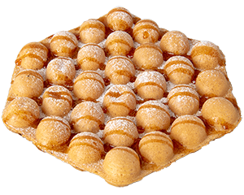
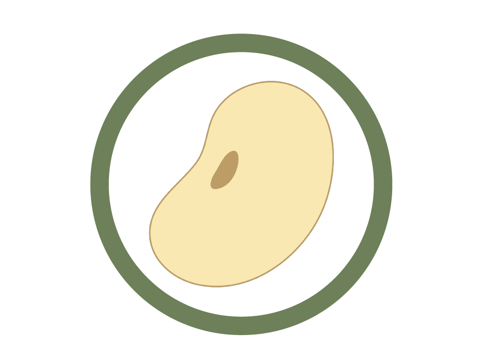
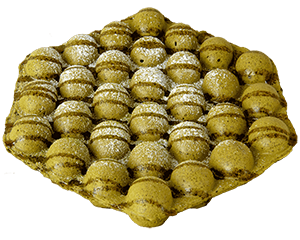
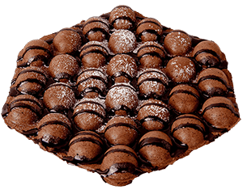
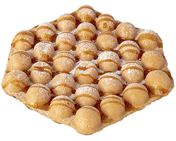
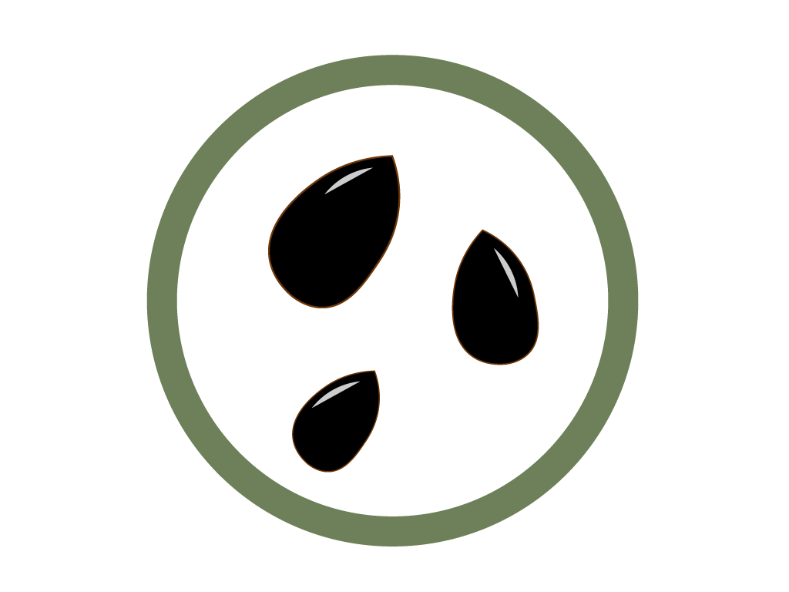

Plain
プレーン
¥600
Classic golden batter with gentle soy & beet sugar sweetness.

Soy- Nut-free
100% Niigata rice flour · baked to order.
Inspired by Hong Kong’s bubble waffles and made with 100% Niigata rice flour and soy milk. Baked fresh to order — golden and crispy outside, warm and chewy inside. 国産米粉の焼きたてワッフル

プレーン
¥600
Classic golden batter with gentle soy & beet sugar sweetness.

Soy
抹茶
¥690
Rich Japanese green tea aroma.

ココア
¥690
Deep, bittersweet cacao in every bubble.

黒ゴマ
¥690
Nutty roasted black sesame.

SesameVisit us
Last order 9:45 PM · 3-min walk from Yakuin-odori Stn (Exit 2) · 12 seats & takeout
Show this screen to our staff
これをください